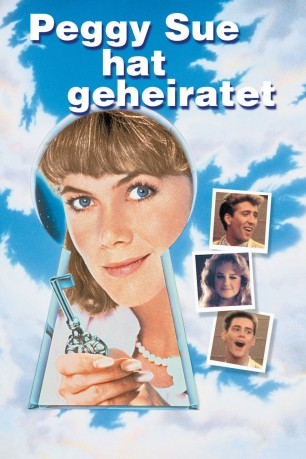

#6196 Peggy Sue hat geheiratet
Alternativ: Peggy Sue Got Married
Auszeichnungen: für 3 Oscars nominiert
 
 IMDB-Wertung: 6.3 / 10
IMDB-Wertung: 6.3 / 10  Metascore: 0
Metascore: 0 
Peggy Sue, Geschäftsfrau und Mutter zweier Kinder, will sich gerade von ihrem windigen Mann Charlie scheiden lassen. Auf einem Klassentreffen zum 25. Abschlußjubiläum bricht sie ohnmächtig zusammen und erwacht im Jahre 1960. Mit dem Wissen einer reifen Frau erlebt sie erneut die turbulente Zeit ihrer eigenen Pubertät, lernt Charlie neu schätzen und bleibt - zurück in der Zukunft - mit ihm zusammen.
Jahr: 1986
Dauer: 98 Minuten
FSK: 12
Land: USA Studio: TriStar PicturesTonspuren: DD2.0 - ,
Untertitel:
Auflösung: 720p (1280x696) Größe: 3942 MB
Genre: Drama, Komödie, Fantasy, Liebe
Regisseur:  Francis Ford Coppola
Francis Ford Coppola
Drehbuch: Joseph Barbera
Soundtrack:
Darsteller:
 Kathleen Turner als Peggy Sue
Kathleen Turner als Peggy Sue Nicolas Cage als Charlie Bodell
Nicolas Cage als Charlie Bodell- Barry Miller als Richard Norvik
- Catherine Hicks als Carol Heath
 Joan Allen als Maddy Nagle
Joan Allen als Maddy Nagle Kevin J. O'Connor als Michael Fitzsimmons
Kevin J. O'Connor als Michael Fitzsimmons Jim Carrey als Walter Getz
Jim Carrey als Walter Getz- Lisa Jane Persky als Delores Dodge
 Lucinda Jenney als Rosalie Testa
Lucinda Jenney als Rosalie Testa- Wil Shriner als Arthur Nagle
- Barbara Harris als Evelyn Kelcher
- Don Murray als Jack Kelcher
 Sofia Coppola als Nancy Kelcher
Sofia Coppola als Nancy Kelcher- Maureen O'Sullivan als Elizabeth Alvorg
- Leon Ames als Barney Alvorg
 Helen Hunt als Beth Bodell
Helen Hunt als Beth Bodell Don Stark als Doug Snell
Don Stark als Doug Snell- Ginger Taylor als Janet
 Glenn Withrow als Terry
Glenn Withrow als Terry- Harry Basil als Leon
 John Carradine als Leo
John Carradine als Leo Sachi Parker als Lisa
Sachi Parker als Lisa- Morgan Upton als Mr. Gilfond
- Daniel R. Suhart als Chinese Waiter
- Harrod Blank als Dancer , uncredited
 Michael Garvey als Student , uncredited
Michael Garvey als Student , uncredited- Tanner Lagasca als Student , uncredited
- Randy Bourne als Scott Bodell
- Marshall Crenshaw als Reunion Band
- Chris Donato als Reunion Band
- Robert Crenshaw als Reunion Band
- Tom Teeley als Reunion Band
- Graham Maby als Reunion Band
- Ken Grantham als Mr. Snelgrove
- Sigrid Wurschmidt als Sharon
- Vivien Straus als Sandy
- Lewis Leibovich als Dr. Daly
- Bill Bonham als Drunk
- Joe Lerer als Drunk Creep
- Martin Scott als The Four-Mations
- Marcus Scott als The Four-Mations
- Carl Lockett als The Four-Mations
- Tony Saunders als The Four-Mations
- Vincent Lars als The Four-Mations
- Larry E. Vann als The Four-Mations
- Lawrence Menkin als Elderly Gentleman
- Leslie Hilsinger als Majorette
- Al Nalbandian als Lodge Member
- Dan Leegant als Lodge Member
- Ron Cook als Lodge Member
Datei: X:\1986\Peggy Sue hat geheiratet (1986, FSK12, 1280x696).mkv seit 11.05.2017
Festplatte: HD 1980-1986
 Es gibt insgesamt 50 Filme in der Gruppe '1986'
Es gibt insgesamt 50 Filme in der Gruppe '1986'